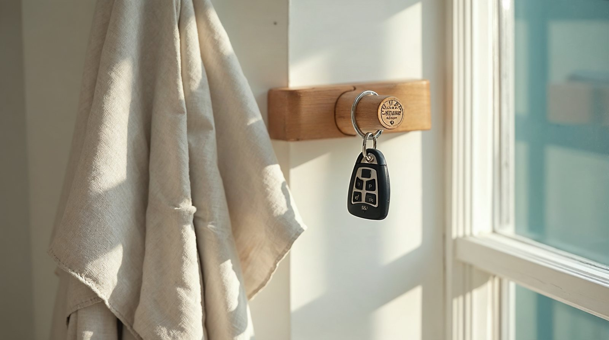
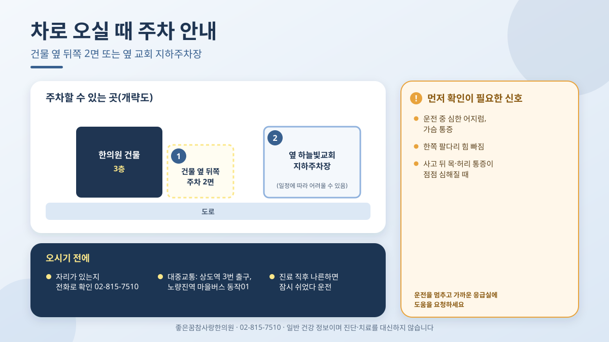

이종호 한의사 감수좋은꿈참사랑한의원 대표원장 (한의사 면허번호 19769)발행 2026-11-23 · 수정 2026-11-26
이 글의 차례
- 왜 미리 확인하면 좋을까요
- 주차는 이렇게 확인하세요
- 주차를 묻는 전화에서 함께 알려 주시면 좋은 것
- 이용할 때 알아 둘 것
- 왜 운전은 허리와 목에 부담이 될까요
- 운전석에서 오른쪽 엉덩이와 다리가 저린 것은 왜일까요?
- 상도동 언덕길을 운전할 때 살필 점
- 운전석은 어떻게 맞추면 좋을까요?
- 차에 타고 내릴 때 허리를 덜 쓰는 방법
- 오래 운전한 날은 이렇게 풀어 주세요
- 운전이 직업이라면 하루를 이렇게 나눠 보세요
- 주차한 뒤 걸어오는 몇 걸음도 몸을 깨우는 시간입니다
- 추운 날 차에 오르기 전에는
- 운전이 잦은 분이라면 스스로 점검해 보세요
- 한의원에서 함께 살필 수 있는 경우
- 진료실에서는 무엇을 여쭙나요?
- 사고 뒤 운전이 불안하게 느껴진다면
- 보호자가 차로 모시고 오실 때
- 진료를 마친 뒤 바로 운전해도 될까요?
- 운전과 불편을 이렇게 기록해 오세요
- 오시기 전에 챙겨 두면 좋은 것
- 이런 증상은 먼저 확인이 필요합니다
차로 오실 때는 그날 주차 가능 여부와 위치를 방문 전 전화(02-815-7510)로 확인해 주시면 안내해 드립니다. 몸이 불편해 대중교통이 부담스러운 날 차로 오시는 분이 많아, 오시기 전에 챙겨 두면 좋은 점을 정리했습니다.
허리가 아파 아침에 양말 신기도 힘든 날, 지하철 계단과 버스 손잡이를 떠올리면 엄두가 나지 않습니다. 결국 차 열쇠를 집어 들게 되지요. 그런데 운전석에 앉는 순간, 그리고 내리려고 몸을 트는 순간 허리가 찌릿해서 "차로 와도 쉽지는 않구나" 싶으셨을 겁니다.
그래서 이 글에는 주차를 확인하는 방법과 함께, 아픈 몸으로 운전하고 타고 내릴 때 조금이라도 덜 힘든 요령을 담았습니다. 오시는 길부터 몸이 덜 지치면, 진료실에서도 한결 편하게 이야기를 나누실 수 있습니다.
왜 미리 확인하면 좋을까요
- 주차할 수 있는 자리는 시간대와 그날 사정에 따라 달라, 출발 전에 전화로 물어보면 헛걸음을 줄일 수 있습니다.
- 통증이 있는 날은 주차 자리를 찾느라 오래 걷거나 서 있는 것도 부담이 됩니다.
- 사고 뒤 처음 운전해서 오시는 분은 무리하지 말고 대중교통이나 동승을 고려하는 것이 좋습니다.
- 몸이 불편한 날 혼자 운전하기 어렵다면 보호자가 함께 오시는 것도 방법입니다.

주차는 이렇게 확인하세요
- 출발 전에 02-815-7510으로 전화해 그날 주차 가능 여부와 위치를 물어보기
- 주차 요금이 궁금하면 같은 통화에서 함께 여쭤보기
- 자리가 없을 때를 대비해 대중교통 길도 미리 알아 두기
주차를 묻는 전화에서 함께 알려 주시면 좋은 것
주차를 확인하려고 전화하실 때, 처음 방문인지와 도착 예정 시각도 함께 말씀해 주세요. 처음 오시는 날은 접수와 상담에 시간이 걸리니, 그날 진료 일정에 맞춰 도착 시각을 정하기 쉽습니다.
몸이 많이 불편해서 오래 걷거나 기다리기 어렵다면 그 점도 미리 알려 주세요. 평일은 저녁 8시, 토·일·공휴일은 오후 3시에 진료가 끝나니, 마감 가까이 도착할 것 같다면 같은 통화에서 접수 가능 여부도 여쭤 보시면 됩니다.
이용할 때 알아 둘 것
- 대중교통으로는 7호선 상도역 3번 출구에서 약 200m 직진한 뒤 오거리에서 우회전해 약 200m 오시면 됩니다.
- 노량진역(1·9호선) 3번 출구에서는 마을버스 동작01을 타고 신동아리버파크에서 내리시면 됩니다.
- 허리나 다리가 불편한 날은 차에서 내리기 전 발목을 몇 번 돌리고 천천히 일어나기
- 진료를 마친 뒤 몸이 나른하면 바로 운전하지 말고 잠시 쉬었다가 출발하기
왜 운전은 허리와 목에 부담이 될까요
운전석에 앉으면 엉덩이는 낮고 무릎은 높은 자세가 되기 쉽습니다. 이 자세에서는 골반이 뒤로 기울고 허리가 둥글게 말립니다. 여기에 오른발은 페달 위에서 계속 미세하게 힘을 주고 있으니, 허리와 골반 오른쪽이 먼저 뻐근해지는 분이 많습니다.
차가 달리는 동안 바닥에서 올라오는 잔진동도 몸에는 쌓입니다. 자세를 바꾸지 못한 채 진동을 오래 받으면 허리 주변 근육이 쉬지 못합니다. 예를 들어 출퇴근에 왕복 두 시간씩 운전하는 경우, 일하는 시간과 별개로 하루 두 시간을 같은 자세로 버티는 셈입니다.
목과 어깨도 마찬가지입니다. 막히는 길에서 앞차와 신호를 살피느라 고개가 앞으로 나가고, 핸들을 꽉 쥔 손에 힘이 들어가면 어깨가 귀 쪽으로 올라갑니다. 운전을 마치고 나면 뒷목이 뻣뻣하고 어깨가 무거운 이유가 여기에 있습니다.
운전석에서 오른쪽 엉덩이와 다리가 저린 것은 왜일까요?
운전하는 동안 오른발은 가속과 브레이크 페달을 오가며 쉬지 않고 움직입니다. 오른쪽 엉덩이 깊은 근육과 허벅지 뒤 근육이 계속 긴장하고 있는 셈이지요. 이 근육들이 오래 굳어 있으면 엉덩이에서 다리 쪽으로 당기거나 저린 느낌이 생길 수 있습니다.
뒷주머니에 지갑이나 휴대폰을 넣은 채 오래 앉아 있는 습관도 살펴보세요. 한쪽 엉덩이 밑에 두툼한 물건이 깔리면 골반이 기울고, 그 아래를 지나는 부위가 눌릴 수 있습니다. 운전하기 전에 뒷주머니를 비우는 것만으로도 차이를 느끼는 분이 있습니다.
저림이 엉덩이에서 종아리나 발까지 내려가는지, 앉아 있을 때만 그런지 걸을 때도 그런지가 중요합니다. 진료 때 저린 범위를 손으로 짚어 보여 주시면 살피는 데 도움이 됩니다.
상도동 언덕길을 운전할 때 살필 점
상도동 일대는 오르막과 내리막이 많아, 운전할 때 브레이크를 밟고 있는 시간이 깁니다. 내리막에서 브레이크를 오래 밟거나 오르막 정체 구간에서 발을 계속 긴장시키면 오른쪽 종아리와 발목이 뻐근해지기 쉽습니다.
신호에 걸려 오래 멈출 때는 안전한 범위에서 발에 들어간 힘을 잠시 풀어 보세요. 목적지에 도착하면 차에서 내리기 전에 발목을 몇 번 돌려 주시고, 내려서는 첫 몇 걸음을 천천히 걸으시면 좋습니다.
운전석은 어떻게 맞추면 좋을까요?
먼저 의자 높이를 엉덩이가 무릎과 비슷하거나 조금 높아지도록 맞춰 보세요. 등받이는 너무 눕히지도, 너무 세우지도 말고 살짝 뒤로 기운 정도가 편합니다. 등받이를 많이 눕히면 고개를 앞으로 빼고 운전하게 되어 목에 부담이 갑니다.
의자 앞뒤 거리는 브레이크를 끝까지 밟았을 때 무릎이 살짝 굽어 있는 정도가 알맞습니다. 다리를 쭉 펴야 페달에 닿는다면 너무 먼 것이고, 무릎이 핸들에 닿을 듯하면 너무 가까운 것입니다.
허리와 등받이 사이가 뜬다면 작은 수건을 말아 허리 뒤에 받쳐 보세요. 머리 받침은 뒤통수 가운데쯤 오도록 올리시고, 거울은 바른 자세로 앉은 상태에서 맞추세요. 자세가 무너지면 거울이 잘 안 보여서 저절로 다시 앉게 됩니다.
차에 타고 내릴 때 허리를 덜 쓰는 방법
허리가 아플 때 가장 힘든 순간은 운전보다 타고 내릴 때입니다. 한 발을 먼저 넣고 몸을 비틀며 앉으면 허리가 꼬인 채로 체중을 받게 됩니다. 대신 문을 열고 등을 좌석 쪽으로 향한 채 엉덩이부터 먼저 앉으세요. 그다음 두 무릎을 붙인 채 몸 전체를 돌려 두 다리를 함께 들여놓습니다.
내릴 때는 반대 순서입니다. 몸 전체를 문 쪽으로 돌려 두 다리를 함께 밖으로 내리고, 발을 땅에 단단히 디딘 뒤 문틀이나 손잡이를 잡고 천천히 일어나세요. 처음에는 어색해도 몇 번 해 보면 금세 익숙해집니다.
가방이나 짐은 미리 조수석이나 뒷좌석에 두고 타세요. 무거운 가방을 든 채 몸을 숙여 앉으면 허리에 짐의 무게까지 더해집니다. 내릴 때도 몸이 먼저 내린 뒤 짐을 꺼내면 한결 수월합니다. 허리가 많이 아픈 날은 낮은 차보다 높이가 있는 차가 타고 내리기 편하다고 느끼는 분도 있습니다.
오래 운전한 날은 이렇게 풀어 주세요
장거리 운전을 하신다면 한 시간에 한 번은 차를 세우고 내려서 몇 분이라도 걸어 보세요. 차에서 내리면 두 손을 허리에 대고 천천히 몸을 뒤로 젖혀 보고, 어깨를 크게 몇 번 돌려 주면 됩니다. 아픈 곳이 더 당기면 바로 멈추세요.
신호를 기다리는 짧은 시간에도 할 수 있는 것이 있습니다. 핸들을 쥔 손의 힘을 한 번 빼고, 어깨를 툭 떨어뜨리고, 턱을 살짝 당겨 보세요. 하루에 수십 번 신호에 걸린다면 그만큼 몸을 풀 기회도 수십 번 있는 셈입니다.
운전이 직업이라면 하루를 이렇게 나눠 보세요
택배나 영업처럼 하루 대부분을 차에서 보내는 분은 쉬는 시간을 따로 내기 어렵습니다. 그럴 때는 차에서 내리는 순간을 몸 푸는 시간으로 써 보세요. 물건을 내리거나 거래처에 들를 때마다 허리를 한 번 펴고 어깨를 한 번 돌리는 식입니다.
점심은 차 안에서 급히 드시기보다 잠깐이라도 내려서 드시고, 식사 뒤 5분이라도 걸어 보세요. 하루 끝에는 따뜻한 물로 씻으며 허리와 엉덩이를 데워 주면 좋습니다. 몸이 따뜻해야 굳은 근육도 풀리기 쉽습니다.
물을 자주 마시지 않으려는 분도 많습니다. 화장실 가기 번거로워서이지요. 하지만 물을 너무 적게 마시면 몸이 쉽게 지치고 근육도 뻣뻣해지기 쉬우니, 쉬는 곳에 들를 때마다 조금씩 나눠 드세요.
주차한 뒤 걸어오는 몇 걸음도 몸을 깨우는 시간입니다
차에서 내려 진료실까지 걸어오는 짧은 거리도 그냥 지나치지 마세요. 오래 앉아 있던 몸은 굳어 있어서, 내리자마자 성큼성큼 걸으면 허리와 무릎이 놀랄 수 있습니다. 처음 몇 걸음은 보폭을 작게, 천천히 걸으며 몸이 펴지기를 기다려 주세요.
진료실에 도착하면 잠시 앉아 숨을 고르신 뒤에 진맥을 합니다. 운전하며 긴장했던 몸이 조금 가라앉은 뒤라야 평소의 몸을 짚기 좋기 때문입니다.
추운 날 차에 오르기 전에는
겨울 아침 차가운 운전석에 앉으면 몸이 움츠러들면서 허리와 어깨가 더 굳습니다. 시동을 걸고 차 안이 조금 데워질 때까지 기다리는 동안 어깨를 돌리고 손을 쥐었다 펴 보세요. 목 뒤를 감싸는 목도리도 도움이 됩니다.
허리가 찬 느낌이 드는 분은 얇은 무릎 담요를 허리 뒤에 받쳐 보세요. 몸 따뜻하게 지내는 것은 제가 늘 강조하는 회복의 바탕 가운데 하나입니다.
운전이 잦은 분이라면 스스로 점검해 보세요
아래 가운데 해당하는 것이 있다면 진료 때 함께 말씀해 주세요.
- 30분만 운전해도 허리나 엉덩이가 뻐근하다
- 운전 뒤 차에서 내릴 때 허리를 바로 펴기 어렵다
- 오른쪽 다리나 발바닥이 저리거나 당긴다
- 운전을 마치면 뒷목과 어깨가 뻣뻣하다
- 사고 뒤로 운전석에 앉으면 몸이 긴장된다
하나둘이라면 운전석 자세와 쉬는 간격을 바꿔 보는 것부터 시작해 보세요. 여러 가지가 겹치거나 운전하지 않는 날에도 불편이 이어진다면, 운전 자세만의 문제가 아닐 수 있으니 진료실에서 함께 살펴보겠습니다.
한의원에서 함께 살필 수 있는 경우
- 운전을 오래 해서 허리와 다리가 뻐근한 경우 앉는 자세와 근육의 긴장을 함께 살핍니다.
- 운전 중 목과 어깨가 굳는 경우 자세를 함께 살핍니다.
- 오래 앉아 운전하는 직업이라 허리와 골반이 뻐근한 경우 앉는 시간과 쉬는 간격을 함께 살핍니다.
- 교통사고 뒤 운전석에 앉으면 목과 허리가 불편한 경우 사고 경위와 함께 살핍니다.
처음 오시면 접수, 상담, 진맥과 필요하다고 판단될 때의 진찰(설진·복진·초음파 등), 상태에 맞는 치료, 귀가 전 안내 순서로 진행합니다. 다시 오시면 지난번 이야기부터 이어서 여쭙습니다.
진료실에서는 무엇을 여쭙나요?
하루에 운전하는 시간과 주로 어떤 길을 다니는지, 운전 중 언제부터 불편해지는지를 여쭙습니다. 운전석에서 내려 걸을 때는 어떤지, 잠과 소화는 어떤지도 함께 듣습니다. 진맥은 모든 분께 하고, 서고 걷고 앉는 동작을 직접 확인합니다.
통증 부위를 눈으로 확인할 필요가 있다고 판단되면 초음파로 살피기도 합니다. 그 뒤 오늘 할 치료와 함께, 운전석 자세나 쉬는 간격처럼 생활에서 바꿔 볼 것을 말씀드립니다.
사고 뒤 운전이 불안하게 느껴진다면
교통사고를 겪은 뒤에는 몸뿐 아니라 마음도 놀랍니다. 운전대를 잡으면 어깨가 굳고, 옆 차가 가까이 오면 가슴이 두근거리는 분도 있습니다. 이런 긴장이 이어지면 잠이 얕아지고 목과 허리의 불편도 더 크게 느껴질 수 있습니다.
이럴 때는 억지로 혼자 운전하기보다 가족이 운전하는 차를 타거나 대중교통을 이용해 오셔도 됩니다. 운전할 때 어떤 상황에서 긴장이 커지는지 진료 때 말씀해 주시면, 몸의 불편과 함께 살펴보겠습니다.
보호자가 차로 모시고 오실 때
부모님이나 가족을 모시고 오신다면, 출발 전에 전화로 주차 가능 여부를 먼저 확인해 주세요. 자리를 찾느라 차 안에서 오래 기다리는 것도 아픈 분에게는 부담이 됩니다.
내리실 때는 보호자가 먼저 내려 문을 열고, 아픈 분이 두 다리를 함께 내린 뒤 일어나실 수 있도록 곁에서 손을 잡아 드리세요. 진료를 마친 뒤 돌아가는 차 안에서는 등받이를 조금 젖혀 편하게 쉬시도록 해 드리면 좋습니다.
진료를 마친 뒤 바로 운전해도 될까요?
진료 뒤 몸이 나른하거나 졸리게 느껴질 수 있고, 긴장이 풀리며 하품이 나기도 합니다. 그럴 때는 바로 출발하지 말고 잠시 쉬었다가 운전하세요. 침을 맞은 날에는 과음과 무리한 운동을 피해 주세요.
추나를 받은 뒤 몸이 가벼워졌다고 느껴도, 그날은 오래 운전하는 일정은 피하시는 것이 좋습니다. 집에 도착하면 운전 뒤 불편이 어땠는지 한 줄 적어 두세요. 다음 진료 때 그 메모부터 이어서 여쭙겠습니다.
운전과 불편을 이렇게 기록해 오세요
며칠만 기록해도 도움이 됩니다. 운전한 시간, 다닌 길, 운전 중 언제부터 어디가 불편했는지를 짧게 적어 주세요. 예를 들어 "출근 50분, 정체 구간 30분째부터 오른쪽 엉덩이 뻐근, 내릴 때 허리 펴기 힘듦"처럼 적으면 됩니다.
쉬어 갔을 때와 쉬지 않았을 때 차이가 있었는지도 함께 적어 보세요. 그 차이가 생활에서 바꿔 볼 점을 정하는 데 좋은 단서가 됩니다.
운전석 자세를 바꿔 본 날이 있다면 그것도 적어 주세요. 수건을 허리에 받쳤더니 덜했다거나, 의자를 당겼더니 무릎이 편했다는 작은 변화가 다음 진료의 이야기를 훨씬 구체적으로 만들어 줍니다.
오시기 전에 챙겨 두면 좋은 것
- 오래 운전하는 분은 하루 운전 시간과 불편한 자세 메모
- 복용 중인 약 목록
- 운전 뒤 더 불편해지는 부위
이런 증상은 먼저 확인이 필요합니다
- 운전 중 심한 어지럼, 가슴 통증, 한쪽 팔다리 힘 빠짐이 생긴 경우
- 사고 뒤 목이나 허리 통증이 점점 심해지는 경우
이런 신호가 있으면 한의원보다 가까운 병원이나 응급실을 먼저 찾으세요.

한의원에서 함께 살필 것
- 운전을 오래 해서 허리와 다리가 뻐근한 경우 앉는 자세와 근육의 긴장을 함께 살핍니다.
- 운전 중 목과 어깨가 굳는 경우 자세를 함께 살핍니다.
- 오래 앉아 운전하는 직업이라 허리와 골반이 뻐근한 경우 앉는 시간과 쉬는 간격을 함…
먼저 확인이 필요한 신호
- 운전 중 심한 어지럼, 가슴 통증, 한쪽 팔다리 힘 빠짐이 생긴 경우
- 사고 뒤 목이나 허리 통증이 점점 심해지는 경우
자주 묻는 질문
주차는 몇 대까지 가능한가요?
주차 가능 여부와 위치는 그날 사정에 따라 달라 방문 전 02-815-7510으로 전화하시면 안내해 드립니다.
주차비는 어떻게 되나요?
주차 요금 정책은 방문 전에 전화로 확인해 주세요.
주차가 어려우면 어떻게 하나요?
상도역 3번 출구에서 걸어오시거나, 노량진역 3번 출구에서 마을버스 동작01을 타고 신동아리버파크에서 내리시는 방법이 있습니다.
운전을 오래 해서 허리가 아픈데 상담할 수 있나요?
네. 하루 운전 시간과 앉는 자세, 아픈 동작을 여쭙고 함께 살핍니다.
진료 뒤 바로 운전해도 되나요?
몸이 나른하거나 졸리면 잠시 쉬었다가 출발하세요. 불편이 느껴지면 진료실에 말씀해 주세요.
좋은꿈참사랑한의원은 재진 때 지난번 이야기부터 이어서 여쭙니다. 진료시간과 예약은 오시는 길에서 확인하세요.
어디서 상담받을 수 있나요?
좋은꿈참사랑한의원은 서울 동작구 만양로2길 2 신성빌딩 3층·5층(서울 동작구 상도동, 7호선 상도역 3번 출구 근처)에 있습니다. 한의사 3명(이종호 대표원장, 조영기 수석진료원장, 정원영 진료원장)이 진료합니다. 진료시간은 평일 09:30~20:00(점심 13:00~14:00), 토·일·공휴일 09:30~15:00이며, 방문 전 전화로 확인을 권합니다. 예약은 네이버 예약, 카카오톡 상담, 전화 02-815-7510로 받습니다.
이 글은 일반적인 건강 정보이며 개인의 진단이나 치료를 대신하지 않습니다. 증상이 있거나 복용 중인 약이 있다면 진료를 통해 확인하세요. 치료 효과는 개인마다 다를 수 있습니다.
작성 기준: 일반적으로 알려져 있는 건강 정보를 참고해 정리했습니다(대표원장 감수). 증상 기록은 1~2주 동안 하루 1회, 비슷한 시간에 적어 오시면 지난 상태와 비교하기 쉽습니다.